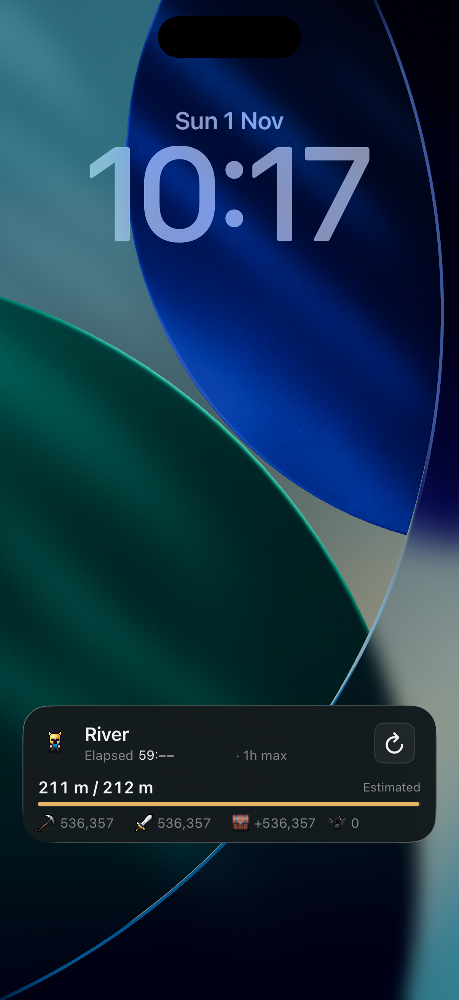
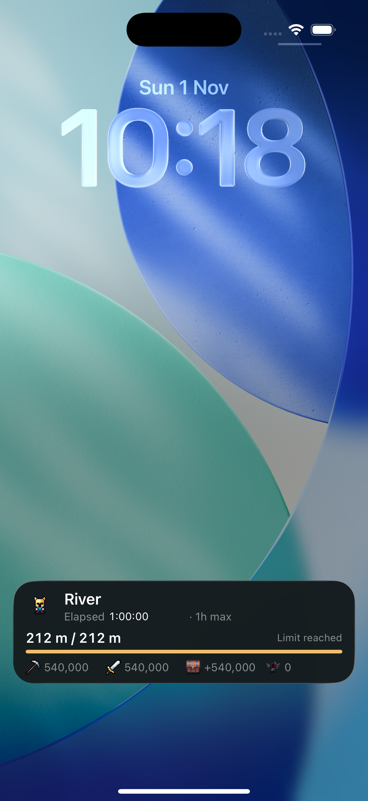
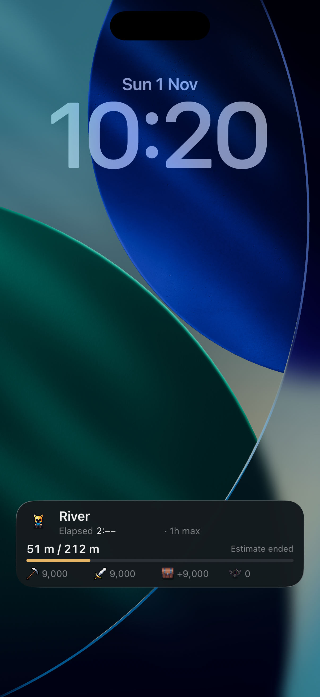
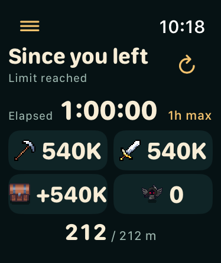
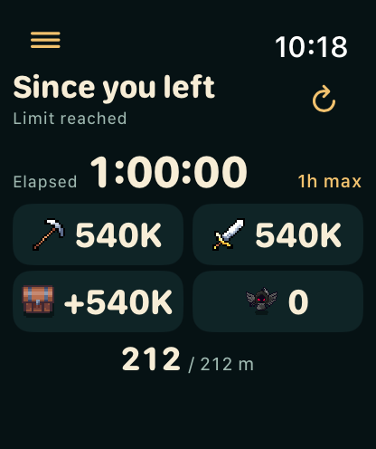
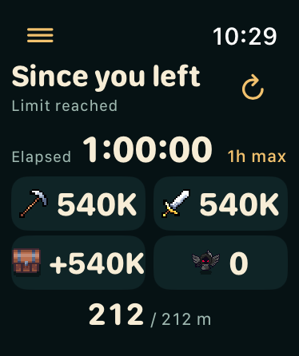

Manual Refresh and expiry
The clock stops at one hour. The activity carries its final estimates before the deadline; the system shows them when it redraws the stale card. These native captures use a controlled high-rate fixture.
Phone
Before the limit 
The card shows the last sampled values. Click for the full Lock Screen. After normal wake 
Final estimates appeared without opening the app or pressing Refresh.
Dimmed display timing The dimmed display retained its earlier counters after the deadline. A normal wake displayed the final values. iOS controls the redraw timing.
When the estimate ends earlier An earlier forecast endpoint says “Estimate ended”. It does not claim the one-hour allowance was used.

Watch
42 mm · at the limit 
Elapsed time and estimated gains stop at the allowance. 46 mm · after the limit 
Staying away longer does not increase the displayed allowance. Refresh from Watch 
A real Watch request updated the existing phone activity. The saved departure snapshot stayed unchanged.